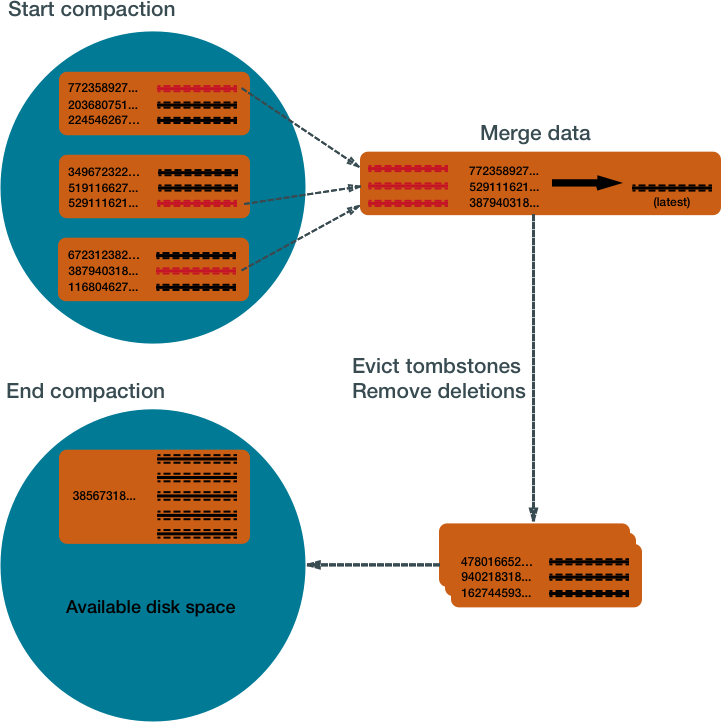
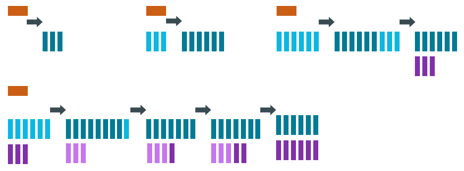
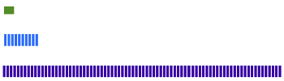
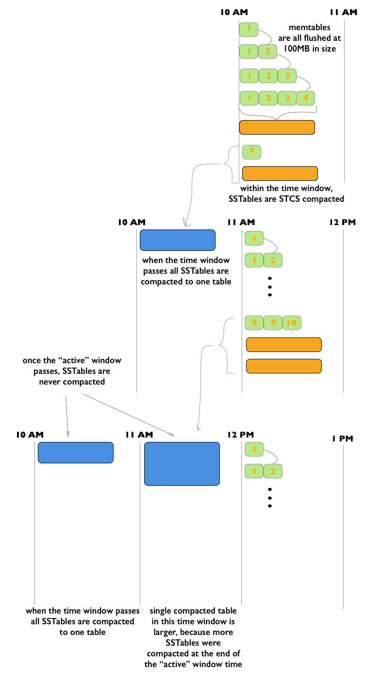

Cassandra processes data at several stages on the write path. Compaction to maintain
healthy SSTables is the last step in the write path process.
The Cassandra write process stores data in files called SSTables. SSTables are immutable.
Instead of overwriting existing rows with inserts or updates, Cassandra writes new timestamped
versions of the inserted or updated data in new SSTables. Cassandra does not perform deletes
by removing the deleted data: instead, Cassandra marks it with tombstones.
Over time, Cassandra may write many versions of a row in different SSTables. Each version may
have a unique set of columns stored with a different timestamp. As SSTables accumulate, the
distribution of data can require accessing more and more SSTables to retrieve a complete
row.
To keep the database healthy, Cassandra periodically merges SSTables and discards old data.
This process is called compaction.
Compaction
Compaction works on a collection of SSTables. From these SSTables, compaction collects all
versions of each unique row and assembles one complete row, using the most up-to-date
version (by timestamp) of each of the row's columns. The merge process is performant,
because rows are sorted by partition key within each SSTable, and the merge
process does not use random I/O. The new versions of each row is written to a new SSTable.
The old versions, along with any rows that are ready for deletion, are left in the old
SSTables, and are deleted as soon as pending reads are completed.

Compaction causes a temporary spike in disk space usage and disk I/O while old and new
SSTables co-exist. As it completes, compaction frees up disk space occupied by old SSTables.
It improves read performance by incrementally replacing old SSTables with compacted
SSTables. Cassandra can read data directly from the new SSTable even before it finishes
writing, instead of waiting for the entire compaction process to finish.
As Cassandra processes writes and reads, it replaces the old SSTables with new SSTables in
the page cache. The process of caching the new SSTable, while directing reads away from the
old one, is incremental — it does not cause a the dramatic cache miss. Cassandra provides
predictable high performance even under heavy load.
Compaction strategies
Cassandra supports different compaction strategies, which control how which SSTables are
chosen for compaction, and how the compacted rows are sorted into new SSTables. Each
strategy has its own strengths. The sections that follow explain each of Cassandra's
compaction strategies.
Although each of the following sections starts with a generalized recommendation, many
factors complicate the choice of a compaction strategy. See Which compaction
strategy is best?.
SizeTieredCompactionStrategy (STCS)
Recommended for write-intensive workloads.
The SizeTieredCompactionStrategy (STCS) initiates compaction when Cassandra has
accumulated a set number (default: 4) of similar-sized SSTables. STCS merges these
SSTables into one larger SSTable. As these larger SSTables accumulate, STCS merges
these into even larger SSTables. At any given time, several SSTables of varying sizes
are present.
Size tiered compaction after many inserts
While STCS works well to compact a write-intensive workload, it makes reads slower
because the merge-by-size process does not group data by rows. This makes it more
likely that versions of a particular row may be spread over many SSTables. Also, STCS
does not evict deleted data predictably because its trigger for compaction is SSTable
size, and SSTables might not grow quickly enough to merge and evict old data. As the
largest SSTables grow in size, the amount of disk space needed for both the new and
old SSTables simultaneously during STCS compaction can outstrip a typical amount of
disk space on a node.
Pros: Compacts write-intensive workload very well.
Cons: Can hold onto stale data too long. Amount of memory needed increases
over time.
LeveledCompactionStrategy (LCS)
Recommended for read-intensive workloads.
The LeveledCompactionStrategy (LCS) alleviates some of the read operation issues with
STCS. This strategy works with a series of levels. First, data in memtables is flushed
to SSTables in the first level (L0). LCS compaction merges these first SSTables with
larger SSTables in level L1.
Leveled compaction — adding SSTables

The SSTables in levels greater than L1 are merged into SSTables with a size greater
than or equal to sstable_size_in_mb (default: 160 MB). If a L1
SSTable stores data of a partition that is larger than L2, LCS moves the SSTable past
L2 to the next level up.
Leveled compaction after many inserts

In each of the levels above L0, LCS creates SSTables that are about the same size.
Each level is 10X the size of the last level, so level L1 has 10X as many SSTables as
L0, and level L2 has 100X as many. If the result of the compaction is more than 10
SSTables in level L1, the excess SSTables are moved to level L2.
The LCS compaction process guarantees that the SSTables within each level starting
with L1 have non-overlapping data. For many reads, this process enables Cassandra to
retrieve all the required data from only one or two SSTables. In fact, 90% of all
reads can be satisfied from one SSTable. Since LCS does not compact L0 tables,
however, resource-intensive reads involving many L0 SSTables may still occur.
At levels beyond L0, LCS requires less disk space for compacting — generally, 10X the
fixed size of the SSTable. Obsolete data is evicted more often, so deleted data uses
smaller portions of the SSTables on disk. However, LCS compaction operations take
place more often and place more I/O burden on the node. For write-intensive workloads,
the payoff of using this strategy is generally not worth the performance loss to I/O
operations. In many cases, tests of LCS-configured tables reveal I/O saturation on
writes and compactions.
Pros: Disk requirements are easier to predict. Read operation latency is
more predictable. Stale data is evicted more frequently.
Cons: Much higher I/O utilization impacting operation latency
TimeWindowCompactionStrategy (TWCS)
Recommended for time series and expiring TTL workloads.
The
TimeWindowCompactionStrategy (TWCS) is similar to DTCS with simpler settings. TWCS
groups SSTables using a series of time windows. During compaction, TWCS applies STCS
to uncompacted SSTables in the most recent time window. At the end of a time window,
TWCS compacts all SSTables that fall into that time window into a single SSTable based
on the SSTable maximum timestamp. Once the major compaction for a time window is
completed, no further compaction of the data will ever occur. The process starts over
with the SSTables written in the next time window.

As the figure shows, from 10 AM to 11 AM, the memtables are flushed
from memory into 100MB SSTables. These SSTables are compacted into larger SSTables
using STCS. At 11 AM, all these SSTables are compacted into a single SSTable, and
never compacted again by TWCS. At 12 NOON, the new SSTables created between 11 AM and
12 NOON are compacted using STCS, and at the end of the time window the TWCS
compaction repeats. Notice that each TWCS time window contains varying amounts of
data.
The TWCS configuration has two main
property settings:
compaction_window_unit: time unit used to define
the window size (milliseconds, seconds, hours, and so on)
compaction_window_size: how many units per window
(1,2,3, and so on)
The configuration for the above example:
compaction_window_unit = ‘minutes’,compaction_window_size =
60
Pros: Used for time series data, stored in tables
that use the default TTL for all data. Simpler configuration than that of DTCS.
Cons: Not appropriate if out-of-sequence time data is required, since
SSTables will not compact as well. Also, not appropriate for data without a TTL, as
storage will grow without bound. Less fine-tuned configuration is possible than with
DTCS.
DateTieredCompactionStrategy (DTCS)
Deprecated in Cassandra 3.0.8/3.8.
The DateTieredCompactionStrategy (DTCS) is similar to STCS. But instead of compacting
based on SSTable size, DTCS compacts based on SSTable age. (Each column in an SSTable
is marked with the timestamp at write time. As the age of an SSTable, DTCS uses
the oldest (minimum) timestamp of any column the SSTable contains.)
Configuring the DTCS time window ensures that new and old data are not mixed in
merged SSTables. In fact, using Time-To-Live (TTL) timestamps, DTCS can eject whole
SSTables containing expired data. This strategy often generates similar-sized SSTables
if time series data is ingested at a steady rate.
DTCS compacts SSTables into larger tables, as with STCS, when the system accumulates
a configurable number of SSTables within a configurable time interval. However, DTCS
skips compacting SSTables that reach a configurable age. This logic reduces the number
of times data is rewritten. Queries that ask for data in a particular last time
interval, such as an hour, can be executed very efficiently on DTCS-compacted SSTables
(particularly if the requested time interval is coordinated with the configured
interval for compaction).
One use case that can cause difficulty with this strategy is out-of-sequence writing.
For example, an operation that writes a timestamped record with a timestamp outside
the current time window. Read repairs can inject out-of-sequence timestamps, so be
sure to turn off read repairs when using DTCS. For more information, see DateTieredCompactionStrategy: Notes from the Field.
Pros: Specifically designed for time series data, stored in tables that
use the default TTL. DTCS is a better choice when fine-tuning is required to meet
space-related SLAs.
Cons: Insertion of records out of time sequence (by repairs or hint
replaying) can increase latency or cause errors. In some cases, it may be
necessary to turn off read repair and carefully test and control the use of
TIMESTAMP options in BATCH, DELETE, INSERT and UPDATE CQL commands.
Which compaction strategy is best?
To implement the best compaction strategy:
Review your application's requirements.
Configure the table to use the most appropriate strategy.
Test the compaction strategies against your data.
The following questions are based on the experiences of Cassandra developers and users
with the strategies described above.
Does your table process time series data?
If so, your best choices are TWCS or DTCS. For details, read the descriptions on this
page.
If your table is not focused on time series data, the choice becomes more complicated. The
following questions introduce other considerations that may guide your choice.
Does your table handle more reads than writes, or more writes than reads?
LCS is a good choice if your table processes twice as many reads as writes or more –
especially randomized reads. If the proportion of reads to writes is closer, the
performance hit exacted by LCS may not be worth the benefit. Be aware that LCS can be
quickly overwhelmed by a high volume of writes.
Does the data in your table change often?
One advantage of LCS is that it keeps related data in a small set of SSTables. If your
data is immutable or not subject to frequent upserts, STCS accomplishes the same type of grouping without the LCS
performance hit.
Do you require predictable levels of read and write activity?
LCS keeps the SSTables within predictable sizes and numbers. For example, if your
table's read/write ratio is small, and it is expected to conform to a Service Level
Agreements (SLAs) for reads, it may be worth taking the write performance penalty of
LCS in order to keep read rates and latency at predictable levels. And you may be able
to overcome this write penalty through horizontal scaling (adding more nodes).
Will your table be populated by a batch process?
On both batch reads and batch writes, STCS performs better than LCS. The batch process
causes little or no fragmentation, so the benefits of LCS are not realized; batch
processes can overwhelm LCS-configured tables.
Does your system have limited disk space?
LCS handles disk space more efficiently than STCS: it requires about 10%
headroom in addition to the space occupied by the data is handles. STCS and
DTCS generally require, in some cases, as much as 50% more than the data space.
Is your system reaching its limits for I/O?
LCS is significantly more I/O intensive than DTCS or STCS. Switching to LCS may
introduce extra I/O load that offsets the advantages.
Testing compaction strategies
Suggestions for determining which compaction strategy is best for your system:
Create a three-node cluster using one of the compaction strategies, stress test the
cluster using cassandra-stress, and measure the results.